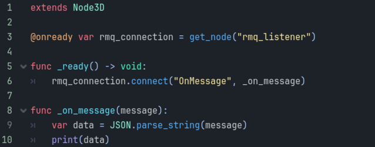
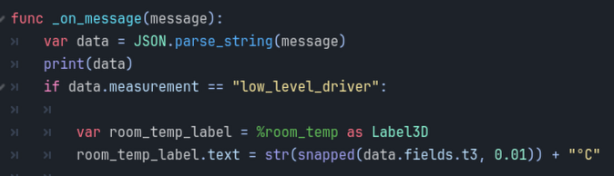
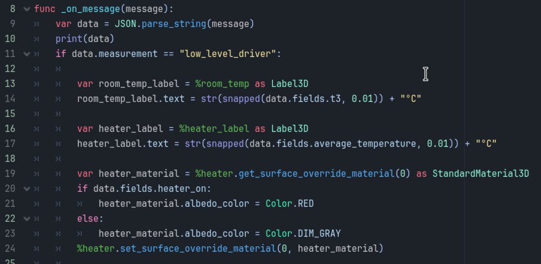
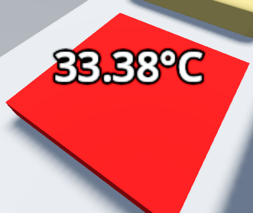
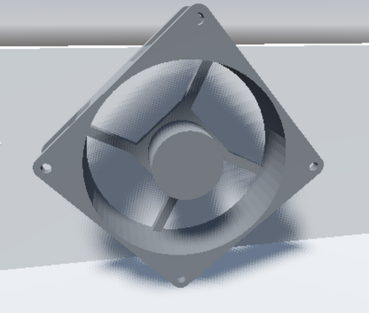

3-IncubatorShadow
This tutorial will connect the visualisation created in the last part with the simulated incubator over RabbitMQ. We will have the following steps:- Set up the C# project
- Start listening to RabbitMQ messages
- Use RabbitMQ messages to change the visualisation
a. Set up the C# project
- 1. In the project, click on the 'Project' menu, then 'Tools', then 'C#', then 'Create C# solution'.
- 2. Close Godot.
- 3. Copy the 'incubator.csproj' located next to this html file to your project folder. If asked, overwrite the 'incubator.csproj' in that folder.
- 4. If you didn't overwrite the file, this means your project is named something else. That's fine. Delete the file named 'YOUR_PROJECT_NAME.csproj'. Rename 'incubator.csproj' so that it replaces the file you just deleted.
- 5. Open up Godot and go back to the project. There should be a little hammer icon in the top-right. Click it to build the C# project.
- Note: Godot will auto-build the project before running, so you can just hit the play button when you want to run.
b. Start listening to RabbitMQ messages
We're very close to getting the data from RabbitMQ into Godot. At the end of this section, we'll have a Digital Shadow.- 6. From the 'scripts/' folder, copy the RabbitMQListener.cs file to your project directory. This has the defaults for RabbitMQ set up already.
- 7. Create a new node in the scene tree by right-clicking the incubator node at the top of the pane on the left. Find the 'Node' type, which has a white ring icon. Rename the node to 'rmq_listener'.
- 8. Right-click this new node, and select 'Attach Script'.
- 9. At the top of this new node, by 'language', select 'C#'
- 10. On the right, select the folder icon, and select the 'RabbitMQListener.cs' file.
- 11. Right-click on the top-most node in your scene tree. It should be named 'incubator_root'. Select 'Attach script'. The defaults should be okay, see the figure below.
- 12. Enter the below text into this script file. Note the tabs for spacing in the funcs (short for functions). GDScript is like Python, where the spacing matters. Below is a figure of it within Godot to help you if needed.
- 13. What this does is: a) finds the 'rmq_listener' node in the tree, b) connects to it, and c) for every message received, print it out.
extends Node3D
@onready var rmq_connection = get_node("rmq_listener")
func _ready() -> void:
rmq_connection.connect("OnMessage", _on_message)
func _on_message(message):
var data = JSON.parse_string(message)
print(data)

- 14. Follow the instructions to make sure that the simulated incubator DT is running on your machine. Ex. By running 'python -m startup.start_all_services' in the 'incubator_dt/software/' folder. As has been the case in previous jupyter notebooks, uncomment the unnecessary lines in the 'start_all_services.py' file (see 0-Service-Dependencies).
- 15. Go back to Godot, and run the project.
- 16. If everything went right, then soon you'll see some debugging info. These are the RabbitMQ messages being read in Godot!
c. Use RabbitMQ messages to change the visualisation
Visualising the Room Temperature
- 17. Create a 'Label3D' node in the scene tree. This will make a child node.
- 18. Rename this node to be 'room_temp'.
- 19. Move this node in the 3D space outside of the incubator box, either by using the gizmo or by setting the 'position' property.
- 20. Right-click on this node in the scene tree, and select '% access with unique name'. There should now be a '%' symbol beside the node in the scene tree (see the figure below).
- 21. As an explanation, this allows Godot to be able to find any node in this scene tree using just the name. We'll use it for the temperature labels to make things easier.
- 22. Go back to the 'incubator.gd' script. This can be done by: a) clicking the scroll icon next to the 'incubator_root', b. finding 'incubator.gd' in the filesystem, or by clicking the 'Script' tab at the top of the editor.
- 23. Add the three new lines from code below to the '_on_message' function.
- 24. Explanation: The first line makes sure the message is from the right place. The second line finds the node within the scene tree, by using the '%' operator and the node name. The 'as Node3D' part makes sure the following line knows this is a Node3D. The last line changes the 'text' property on the node.
if data.measurement == "low_level_driver":
var room_temp_label = %room_temp as Label3D
room_temp_label.text = str(snapped(data.fields.t3, 0.01)) + "°C"

- 25. If you start the viz, when a new message is received from the incubator, you should see the room temperature update.
- 26. Play around with the 'Label3D' node settings. Here, the 'billboard' property is enabled, so that the text always faces the camera.
Visualising the Heater Temperature and State
- 27. Add a new 'Label3d' node as a child of the 'heater' node. This is done by right-clicking on the 'heater' node and selecting 'Add New Child'.
- 28. Name this new node as 'heater_label'.
- 29. For the heater and label nodes, right-click on them and select '% access with unique name'.
- 30. Go back to the 'incubator.gd' script.
- 31. Add the below code to the '_on_message' function.
- 32. Explanation: The first two lines are to set the text of the heater label. The next line gets the material on the mesh of the heater. The if/else sets the colour of the material. And then the last line sets the material back to the mesh.
var heater_label = %heater_label as Label3D
heater_label.text = str(snapped(data.fields.average_temperature, 0.01)) + "°C"
var heater_material = %heater.get_surface_override_material(0) as StandardMaterial3D
if data.fields.heater_on:
heater_material.albedo_color = Color.RED
else:
heater_material.albedo_color = Color.DIM_GRAY
%heater.set_surface_override_material(0, heater_material)

Now when you run the viz, you should see the heater temperature, and it turning red and gray.
Visualising the Fan State
- 33. Make sure that the fan node is set with '% Access with unique name'.
- 34. Then, add this code to the '_on_message' function in 'incubator.gd'.
- 35. Explanation: If the fan is on, the second line creates a repeating animation. The last line turns the fan around the X axis. You might need to tweak this depending on how your fan is rotated.
if data.fields.fan_on:
var fan_tween = get_tree().create_tween().set_loops(3)
fan_tween.tween_property(%fan, "global_rotation", Vector3(TAU, 0, 0), 1).as_relative()

And yes, this means the whole fan rotates. Feel free to improve this if you want, possibly by adding a fan blade mesh.
d. Conclusion
Below is how this project looks at the end of this tutorial. Again, feel free to make your own modifications.

- We're close to having a Digital Twin of the incubator. The last step would be to send a RabbitMQ message back to the incubator simulation.
- However, we'll stop here for now with a Digital Shadow, as this step requires complex configuration of the incubator simulation code itself.